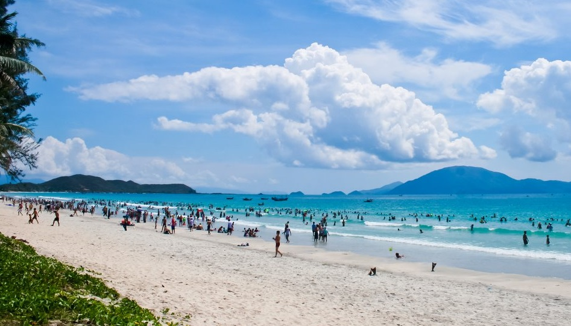

Biển Cửa Lò
Bãi biển Cửa Lò là một trong những bãi biển đẹp ở Bắc Trung Bộ Việt Nam. Bãi biển này thuộc thị xã Cửa Lò, tỉnh Nghệ An, cách thành phố Vinh 16 km về phía Đông Bắc, cách thủ đô Hà Nội 288 km, và cách Thành phố Hồ Chí Minh 1402 km. Cửa Lò cũng được nối với Lào và Bắc Thái Lan bởi Quốc lộ 8 và cách Viêng Chăn thủ đô của Lào 468 km.
